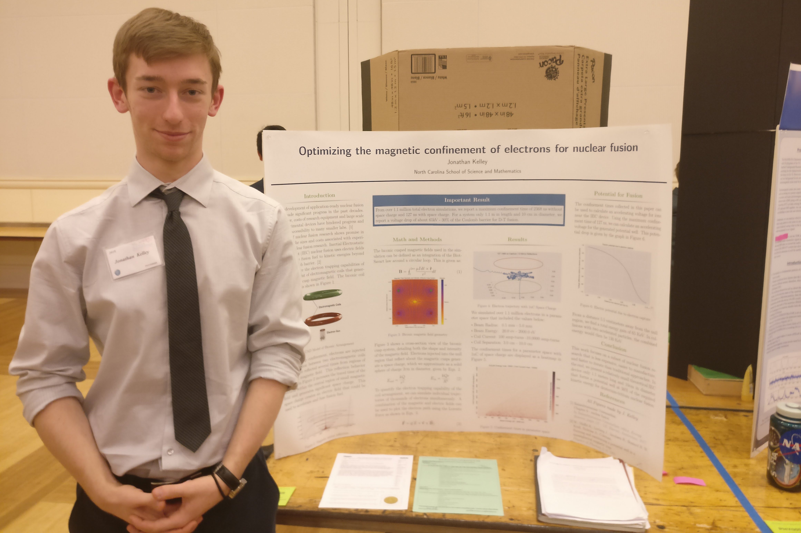

Optimizing the magnetic confinement of electrons for nuclear fusion
Nuclear fusion is suggested to be a big step in the future renewable energy generation and spaceflight propulsion. However, high costs and construction obstacles prohibit many research labs from developing experimental devices. The focus of this paper is to computationally optimize the design parameters for a magnetic trap to potentially be used in low-cost inertial electrostatic confinement (IEC) nuclear fusion devices.
Two electromagnetic coils in a biconic cusp configuration trap hundreds of thousands of simulated electrons. The confinement of each electron contributes to an overall electric potential that can be used to accelerate fusion fuel to kinetic energies for nuclear fusion. OpenCL parallel programming is used to simulate electron trajectories in biconic cusp magnetic fields and contributes to the virtual space charge. From over 1.1 million total electron simulations, we report a maximum simulated confinement time of 127 ns with space charge. For a theoretical system only 1.1 m in length and 10 cm in diameter, we report a voltage drop of about 65kV – 30% of the Coulomb barrier for Deuterium-Tritium fusion. These results suggest that limitations on smale-scale nuclear fusion research might be lower than previously thought.